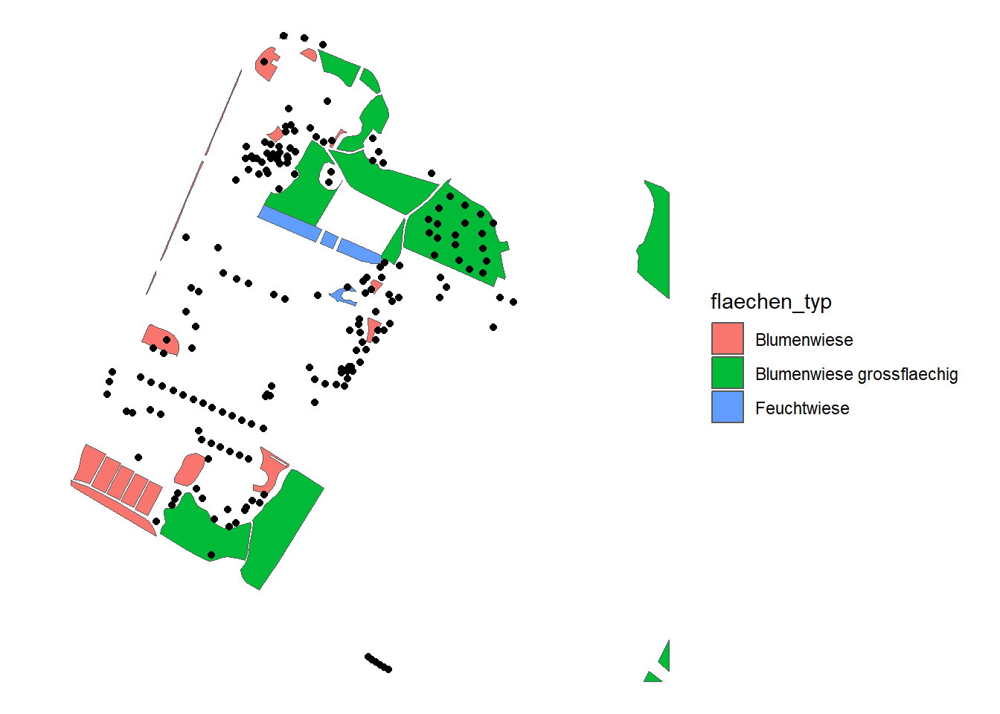

Rauman 1: Übung B
Für die kommende Übung arbeiten wir mit nachstehendem Datensatz. Lade diesen Herunter und importiere ihn in R.
Zudem brauchen wir die folgenden libraries:
library(dplyr)
library(sf)
library(ggplot2)Aufgabe 1: Geopackage “Layers”
Allenfalls ist euch beim Importieren des Geopackage gruental.pgkg folgende Warnmeldung aufgefallen:
Warning message:
In evalq((function (..., call. = TRUE, immediate. = FALSE, noBreaks. = FALSE, :
automatically selected the first layer in a data source containing more than one.Diese Warnmeldung weist darauf hin, dass das Geopackage gruental.gpkg mehrere Layers (rep. Datensätze) enthält und nur der erste Layer importiert wurde. Bringe mit dem Befehl st_layers die Layer Namen in Erfahrung und nutze diese im Anschluss in st_read (als Argument layer =) um die layers einzeln zu importieren und in variablen zu speichern (zB in als Variable wiesen und baeume).
Aufgabe 2: Datensätze erkunden
Nimm dir etwas Zeit und erkunde die beiden Datensätze. Nutze dafür auch die Visualisierungsmöglichkeiten von ggplot (insbesondere geom_sf).

Aufgabe 3: Spatial Join mit Punkten
Wir wollen nun für jeden Baum wissen, ob er sich in einer Wiese befindet oder nicht. Dazu nutzen wir die GIS-Technik Spatial Join, die in der Vorlesung beschrieben wurde. In sf können wir Spatial Joins mit der Funktion st_join durchführen, dabei gibt es nur left sowie inner-Joins (vgl. PrePro 1 & 2). So müssen die Punkte “Links”, also an erste Stelle aufgeführt werden, da wir ja Attribute an die Punkte anheften wollen.
Beachte, dass der Output eine neue Spalte flaechen_typ aufweist. Diese ist leer (NA) wenn sich der entsprechende Baum nicht in einer Wiese befindet. Wie viele Bäume befinden sich in einer Wiese, wie viele nicht?
Aufgabe 4: Spatial Join mit Flächen
Analog der Vorlesung wollen wir nun in Erfahrung bringen, wie hoch der Wiesen-Anteil im Umkreis von 20m um jeden Baum ist. Dazu sind folgende Schritte nötig:
- Als erster Schritt müssen wir jeden Baum mit einem 20m Puffer verstehen. Nutze dazu
st_bufferum speichere den Output alsbaeume_20m. Schau dirbaeume_20mnun genau an. Um welchen Geometrietyp handelt es sich dabei nun? - Berechnen nun die Schnittmenge aus
baeume_20mundwiesenmit der Funktionst_intersectionund speichere den Output alsbaeume_wiesen. Exploriere nunbaeume_wiesen, auch mitggplot(). Was ist passiert? Überprüfe die Anzahl Zeilen pro Datensatz. Haben die sich verändert? Wenn ja, warum? - Berechnen nun die Flächengrösse pro Geometrie mit der Funktion
st_area(). Speichere den Output in einer neuen Spalte vonbaeume_wiesen(z.B. mit dem Namenwiesen_flaeche). Tipp: Konvertiere den Output ausst_areaeinen nummerischen Vektor mitas.numeric(). - Berechne nun aus
wiesen_flaechedenwiesen_anteil. Tipp: 100% ist die Kreisfläche aus \(r^2\times \pi\), wobei in unserem Fall \(r = 20\) entspricht.
Um die berechneten Werte in den Datensatz baeume zu überführen braucht es noch folgende Schritte:
- Konvertiere
baeume_wiesenin einedata.framemitst_drop_geometryund speichere diese alsbaeume_wiesen_df - Nutze die Spalte
baum_idinbaeume_wiesen_dfum den berechnetenwiesen_anteilin den Datenatzbaeumezu überführen. Tipp: Nutze dafür einenleft_join - Ersetze alle
NAWerte in der Spaltewiesen_anteilmit 0.